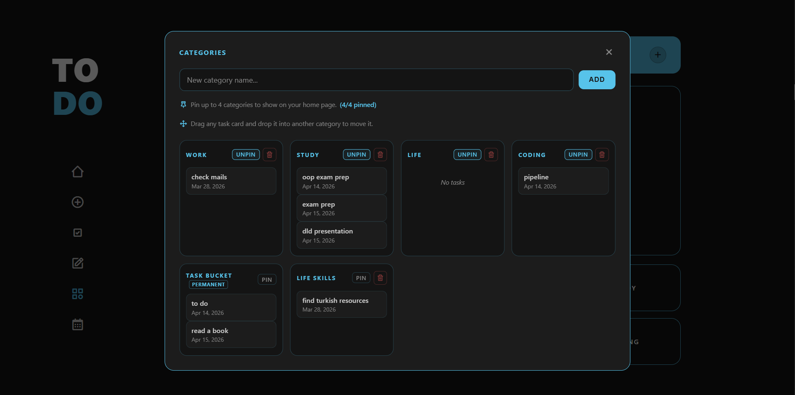
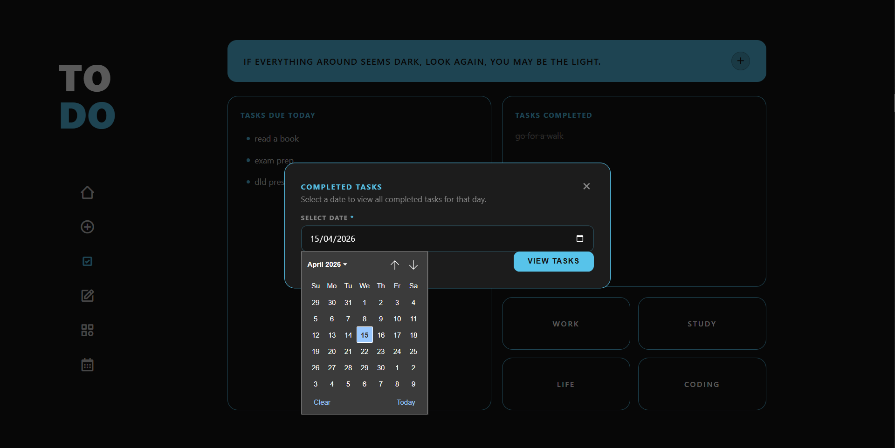

To-Do Web App
A Simple Approach to Daily Task Management
Overview
This project started as an internship task — build a to-do application. But instead of treating it as just another assignment, I used it as an opportunity to solve a problem I had been facing for a long time: finding a to-do app that actually works for me.
Most apps I tried either felt too complex or didn't help me stay consistent. So I decided to build something simple, structured, and practical enough to use daily.

Home screen of the To-Do App
The Problem
Many to-do apps fall into two extremes:
Too Complex
Overloaded with features, making them overwhelming and hard to use consistently.
Too Minimal
Lack of control makes them ineffective for real planning and daily structure.
What I needed was a balance — something that keeps things clear without losing functionality.
Approach
Rather than focusing on adding more features, I tried to make thoughtful decisions around how the app should behave. Each feature was shaped around making tasks easier to manage, reducing friction, and keeping the experience straightforward. The focus was on keeping things useful without making them overwhelming.
Key Features
Focused Categories
Users can create as many categories as they want, but only four can be pinned to the home screen. This small constraint reduces clutter and keeps focus on what actually matters.

Quote System
Productivity isn't just about tasks — it's also about mindset. A daily quote updates automatically, and users can manage their own quote bank: add, delete, and personalise.

Tracking Completed Tasks
Users can view completed tasks by selecting a specific date. This makes progress visible and helps build a sense of consistency over time.

Task Bucket — Preventing Data Loss
If a category is removed, its tasks are automatically moved to a task bucket instead of being deleted. No task disappears unintentionally.
Design Decisions
The interface follows a minimal, dark-themed layout to reduce visual noise. Clear sections like "Tasks Due Today" and "Completed Tasks" help users instantly understand their status without navigating through multiple screens.
Every element was designed to support clarity and ease of use.
What I Learned
Shifted thinking from building features to designing experiences.
Small decisions — like limiting visible categories — can have a big impact on usability.
Good products are not about adding more, but about removing friction.
Conclusion
What started as an internship task turned into something I genuinely use. This project reflects how I approach building products — focusing on clarity, intention, and real-world usability rather than unnecessary complexity.